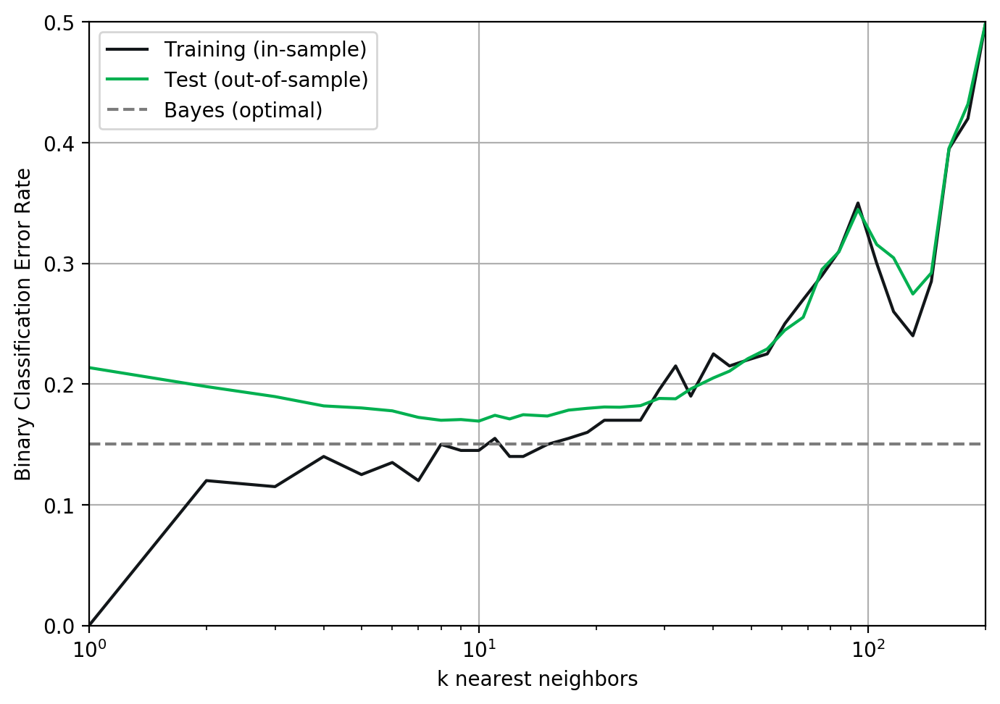

# (c) Numerically evaluate the second derivative for f(x)
# Initialize variables for the analysis
t = 3
# Compute the derivative
df2 = 6 * t
print('(c) The second derivative at t = 3 is {}'.format(df2))(c) The second derivative at t = 3 is 18IDS:705 Principles of Machine Learning
See below for a checklist for your document before you submit.
If you could use help getting started or a refresher on Jupyter notebooks, check out this video for more on basic Jupyter functionality. Using Jupyter notebooks allows you to practice applying machine learning concepts while building programming and writing skills, strengthening your ability to both create creative solutions to machine learning challenges while simultaneously enhancing your ability to communicate the meaning behind your findings and why others should give credence to your results.
We recommend using VS Code for this course and for use in developing your Jupyter notebooks. Rendering pdfs from Jupyter Notebooks in VS Code has a couple of extra steps, though. To render a pdf without any additional extensions, you do the following:


You can save a lot of the above steps if you’re willing to install 2 things: 1. Install Quarto, which is an open-source scientific and technical publishing system (great for making websites and blogs for your professional portfolio). 2. Install the Quarto VS Code extension 3. Install a version of tex for your operating system. 4. Once you do this, you can directly export your documents to pdf:

Open your notebook in a Jupyter Notebook in Google Chrome. Go to File->Print Preview, then after verifying the document looks correct, click “print” and for your printer choose “Save as PDF.”
Whichever method you choose - always check your pdf before submitting to make sure everything is rendered and nothing is cut off!
Assignment grading will consist of two components: content (90%) and presentation (10%). The content grade will be based on the accuracy and completeness (including the depth) of your answers to each question. If a question asks you to explain, hypothesize, or otherwise think critically, be sure to demonstrate your critical engagement with the question. The presentation score will be based on how well you communicate in writing, figure creation, and coding. Clear writing (with appropriate grammar and spelling), organized answers, well-organized/commented code, and properly formatted figures will ensure your success on the presentation component of the assignment.
Below is an example question to demonstrate how to answer a question using a Jupyter notebook.
Calculate the (a) first and (b) second derivative of \(f(t) = t^3\). lastly, (c) numerically evaluate the second derivative for \(t=3\). If \(t\) represents time (seconds) and \(f\) represents distance of a ball over time (in meters), then (d) what does the second derivative at \(t=3\) mean?
ANSWER
The first and second derivatives are calculated as follows:
(a) The first derivative is: \[ \frac{df}{dt} = 3t^2\]
(b) The second derivative is: \[ \frac{d^2f}{dt^2} = 6t\]
(c) We calculate the second derivative at time \(t=3\) as follows:
# (c) Numerically evaluate the second derivative for f(x)
# Initialize variables for the analysis
t = 3
# Compute the derivative
df2 = 6 * t
print('(c) The second derivative at t = 3 is {}'.format(df2))(c) The second derivative at t = 3 is 18(d) This derivative, which is the second derivative of distance with respect to time represents the acceleration of the ball in \(m^2\) per second. This shows how quickly the ball is increasing its speed over time.
Here is an example of a well-prepared figure that checks all of the requirements for good figures. To demonstrate we’ll start by loading some data to plot (the example here is from the lecture on bias-variance tradeoff):
import numpy as np
import matplotlib.pyplot as plt
import pickle
# Load the data for plotting
datafilename = './plot_example_data/data.pkl'
infile = open(datafilename,'rb')
loaded_data = pickle.load(infile)
infile.close()
# Store the loaded data in convenient variable names
kvalues = loaded_data['kvalues']
error_training = loaded_data['error_training']
error_testing = loaded_data['error_testing']
error_bayesclf = loaded_data['error_bayesclf']
# Choose colors that will be distinguishable from one another
color0 = '#121619' # Dark grey
color1 = '#00B050' # Green
color2 = '#7c7c7c' # Light greyThen, we create the plot:
%config InlineBackend.figure_format = 'retina' # Make clear on high-res screens
# Create the plot
plt.figure(figsize=(7,5), dpi= 100) # Adjust the figure size and dots per inch
plt.semilogx(kvalues,error_training,color=color0,label='Training (in-sample)')
plt.semilogx(kvalues,error_testing,color=color1,label='Test (out-of-sample)')
plt.semilogx(kvalues,error_bayesclf,'--',color=color2,label='Bayes (optimal)')
plt.legend()
plt.grid('on')
plt.xlabel('k nearest neighbors') # Always use X and Y labels
plt.ylabel('Binary Classification Error Rate')
plt.axis([1,200,0,0.5]) # Ensure the axis is the right size for the plot data
plt.tight_layout() # Use this to maximize the use of space in the figure
plt.show()
Note the clear x and y axis labels and legends - there are no acronyms or shorthands used, just the full description of what is being plotted. Also note how easy it is to compare the color of lines and identify the baseline (Bayes) comparison line. Make your plots easy to read and understand.
Some questions on the assignments are adapted from sources including:
1. James et al., An Introduction to Statistical Learning
2. Abu-Mostafa, Yaser, Learning from Data
3. Weinberger, Kilian, Machine Learning CS4780, Cornell University